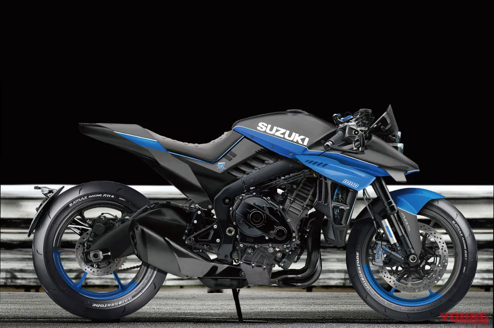

SUZUKI
The Suzuki Katana
Is a street motorcycle that was sold between 1981 and 2006 and then reintroduced in 2019¹.

Engine
The Katana is powered by a high-performance 999cc four-stroke DOHC liquid-cooled inline-four engine². This engine inherits true winning superbike DNA and is based on core architecture that benefits from decades of GSX-R development².
Chassis & Components
The Katana features a twin-spar aluminium alloy frame engineered to provide nimble handling and great road holding performance². The sleek two-tone seat is comfortable, and the seat strap provides the passenger with a good grip². The slim design where the seat meets the fuel tank helps make it easy for the rider’s feet to reach the ground².
Brakes
The Katana has Brembo radial mount monobloc front brake calipers mated with 310mm floating-mount dual discs to provide powerful braking performance². The Antilock Brake System monitors wheel speed 50 times per wheel rotation, and matches stopping power to available traction².
Suspension
The Katana is equipped with 43mm KYB inverted front forks that provide 120mm of stroke for a sporty yet plush ride². The forks feature fully adjustable damping, rebound, compression and spring pre-load².
Price
As of 2024, The Suzuki Katana is available for £12,499².